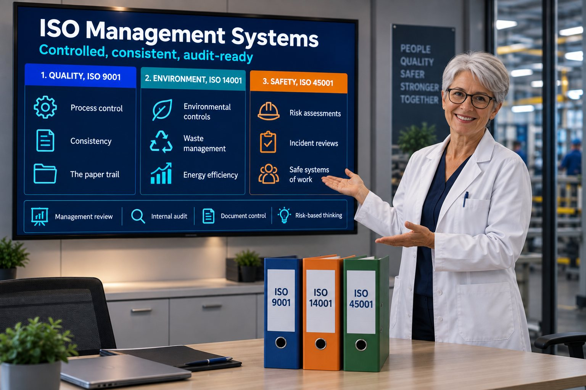

Quality — ISO 9001
Process control, consistency and the paper trail that proves it.

Department: Quality Control and Clinical Excellence
ISO is the discipline that proves you are controlled, consistent, safe and audit-ready. In the Cure Alliance model it is the backbone, because almost every other service leans on the evidence it produces.
Process control, consistency and the paper trail that proves it.
Environmental responsibility built into how the business runs.
The certified extension of your day-to-day safety discipline.
Management reviews, internal audits, document control and risk-based thinking.
| Tender criterion | What this service contributes | Score effect |
|---|---|---|
| Quality | Process control and hard evidence | Major |
| Experience | Case studies backed by ISO maturity | Moderate |
| ESG | ISO 14001 plus DEI evidence | Major |
| Safety | ISO 45001 | Major |
| Innovation | Controlled change management | Moderate |
| Risk | ISO reads as low-risk supplier | Major |
| Delivery | Predictability | Major |
Without ISO, a buyer assumes inconsistent processes, uncontrolled risks, weak governance, unreliable delivery, poor evidence and high operational volatility.
None of that may be true of you. It does not matter. In a tender, the assumption is what gets scored.
Buyers, especially OEMs and Tier-1s, use ISO as a risk filter. If you have it, you are low risk. If you do not, you are high risk, regardless of how good you actually are.
People think ISO is paperwork. It is not. ISO is predictability, and predictability is what buyers want and pay for.